<title>Ogdoecontahedron Networks</title>
<style>
:root{--bg:#f4f1ea;--fg:#2b2620;--mute:#6d6556;--line:#ddd5c4;--gold:#9a7a1c;--card:#fbf8f1}
@media (prefers-color-scheme: dark){:root:not([data-theme="light"]){--bg:#1a1814;--fg:#ece6d6;--mute:#a59e8b;--line:#38342a;--gold:#d8b350;--card:#221f19;color-scheme:dark}}
:root[data-theme="dark"]{--bg:#1a1814;--fg:#ece6d6;--mute:#a59e8b;--line:#38342a;--gold:#d8b350;--card:#221f19;color-scheme:dark}
body{background:var(--bg);color:var(--fg);font:16px/1.55 Georgia,serif;margin:0;padding-inline:16px;padding-block:24px 40px}
main{max-width:980px;margin:0 auto;display:grid;gap:16px}h1{font:600 26px system-ui,sans-serif;margin:0}h1 b{color:var(--gold)}
h2{font:600 18px system-ui,sans-serif;margin:8px 0 0}p{margin:0;max-width:74ch}
img{width:100%;border-radius:8px;border:1px solid var(--line);display:block}figure{margin:0}figcaption{font:13px system-ui,sans-serif;color:var(--mute);margin-top:4px}
.grid{display:grid;grid-template-columns:repeat(auto-fit,minmax(min(100%,300px),1fr));gap:10px}ul{margin:0;padding-left:20px}li{margin:3px 0}.note{font:13px system-ui,sans-serif;color:var(--mute)}
</style>
<main>
<h1><b>DICTO</b> · Ogdoecontahedron networks</h1>
<p>A working study, 16 October 2026, following DICTO's idea that the Ogdoecontahedron forms pyrochlore attachment networks with rhombic tilings in the gaps. Results marked <b>exact</b> are checked in ℚ(√5); the rest are float explorations.</p>
<h2>The networks (exact)</h2>
<ul><li>Copies join face to face on hexagons with no rotation; one tetrahedral set of joints gives a diamond network whose joints form a <b>pyrochlore lattice</b>. No collisions.</li>
<li>A second network fits into the gaps: together they make a body-centred cubic packing filling <b>77.4%</b> of space, more than the densest packing of equal spheres. Each copy touches 8 neighbours on hexagons.</li>
<li>The remaining 22.6% fills exactly with 72 pieces of 3 kinds per copy (no rhombi in that cut).</li></ul>
<figure><figcaption>Top left: one network (joints on a pyrochlore lattice). Top right: the double network, first network warm, second cool.</figcaption></figure>
<figure>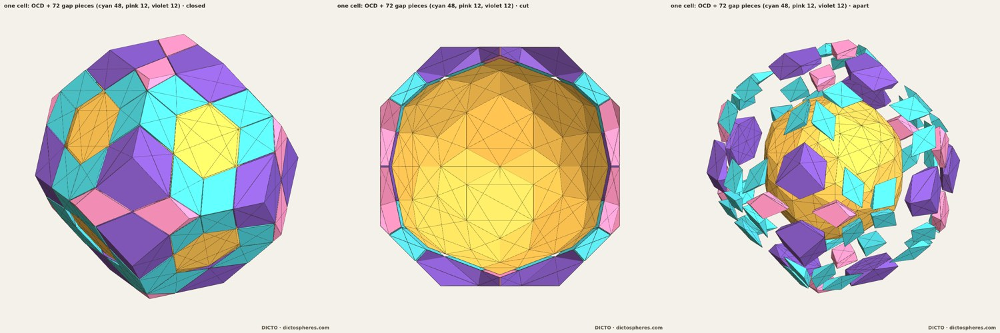<figcaption>One cell: the Ogdoecontahedron and its 72 gap pieces (cyan 48, pink 12, violet 12), closed and pulled apart.</figcaption></figure>
<h2>Explorations (float)</h2>
<ul><li><b>Twinning</b> (turning copies into the other golden frame): no collisions; twinned joints turn 15.52° and keep 94.4% contact, so the gaps change shape.</li>
<li><b>Hexagonal-prism limbs</b>: one per free hexagon, tilted 79.2°; 3 per copy fit without collision.</li>
<li><b>Shared conflict zones</b> (pyrochlore-style): where two limbs cross, the shared zone has <b>two golden-rhombus faces</b>.</li>
<li><b>Golden rhombohedra</b> grown from those rhombi stay in the icosahedral frame (300 grown). They can't lie flush on the hexagons (three-fold planes) or kites; the junction angles are 20.905° (hexagon) and 11.641° (kite).</li>
<li><b>Our pieces as adapters</b>: AXE, CLEO and FUJI have only three- and five-fold faces. The <b>Cleo-Ico</b> has a three-fold base and three golden-rhombus sides, a ready-made hexagon adapter; 12 fit per copy, but tips facing each other collide.</li>
<li><b>The dual Hecatodihedron</b> at 4/9 scale wraps the Ogdoecontahedron with all 102 faces through its corners (as an icosahedron sits in a dodecahedron), but it overlaps its neighbours at the joints.</li></ul>
<h2>X-ray sections at icosahedral planes</h2>
<figure>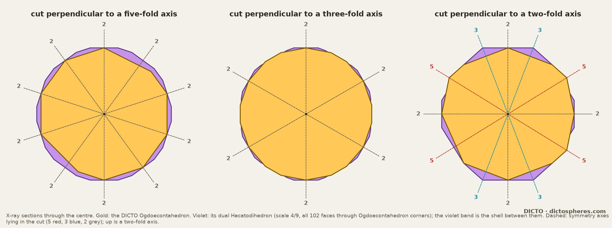<figcaption>Cuts through the centre perpendicular to a five-fold, a three-fold and a two-fold axis. Gold: Ogdoecontahedron; violet: the dual Hecatodihedron; the violet band is the shell between them. Dashed: symmetry axes lying in each cut.</figcaption></figure>
<h2>The X junctions: tips meeting</h2>
<p>The small X-shaped openings seen down a cube axis are the square-face centres of the packing. Four free hexagons face each one, two from each of the two copies on that axis. A Cleo-Ico tip stands on each hexagon. Cut symmetrically, the four tips meet without overlapping: side by side in two pairs that share faces, and the two pairs meet tip to tip at a narrow waist. Down the axis this reads as an hourglass, two triangles point to point: the X.</p>
<figure>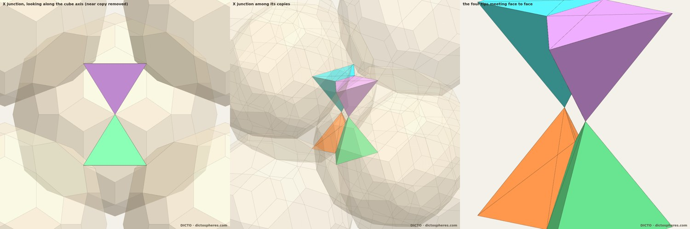<figcaption>Left: down the cube axis, near copy removed. Middle: the junction among its copies (faint). Right: the four tips alone.</figcaption></figure>
<h2>Five-fold symmetry: the frog chorus</h2>
<p>A packing on a lattice can't be five-fold symmetric, and copies joined on all 20 hexagons of one copy collide in exactly 30 pairs: the 30 edges of the dodecahedron formed by the hexagon directions. DICTO's frog-chorus answer is that neighbours don't sing at once. The largest groups of hexagon directions with no two neighbours are the dodecahedron's <b>5 inscribed cubes</b>, and each cube's 8 joints give a clean cubic packing. These are the five voices; any two share exactly 2 directions.</p>
<figure>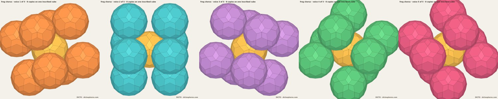<figcaption>In time: the five voices around one copy (gold), looking down a five-fold axis. Each is the one before turned 72°. The loop is saved as an MP4 for social media.</figcaption></figure>
<p><b>In space</b> (float): the five voices side by side in five 72° wedges around a five-fold axis, all copies in the same orientation, exactly five-fold symmetric. Plain wedges clash once per boundary near the axis. With three five-fold sets of copies removed (the silent frogs, 15 of 56 within the test radius), nothing collides. The silences lie close to the axis, so the five-fold chorus has an <b>open channel along its axis</b>, much as five-fold twinned crystals concentrate their strain there. Tested only to radius 2.8.</p>
<figure>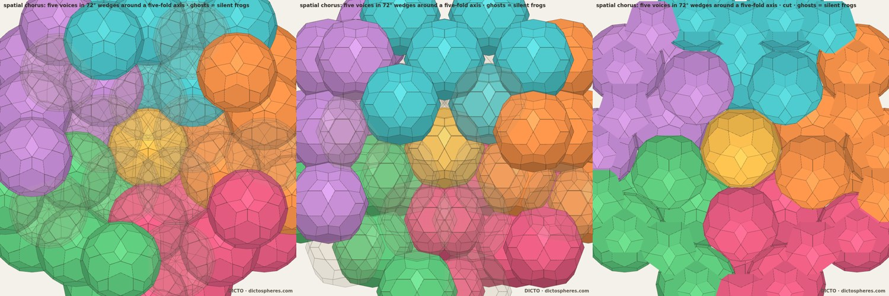<figcaption>The spatial chorus: five voices in five colours around the gold centre; faint ghosts mark the silent positions. Down the axis, tilted, and cut.</figcaption></figure>
<h2>Where Bodhi pieces can go: the three-way split</h2>
<p>All five Bodhi pieces (Vajra, Chatra, Mudra, Crown Jewel, Diadem) have every face in a golden-rhombus plane, so they and the golden rhombohedra can fill exactly the regions walled by those planes. Wrap each Ogdoecontahedron in its tightest golden envelope, a rhombic triacontahedron, cut flat at its 8 joints so neighbouring envelopes don't overlap. Space then splits three ways: the solids (gold, 77.4%), the non-golden shell inside each envelope for Cleo-Ico adapters or resin (pink, 11.8%), and the golden region between the envelopes for Bodhi pieces (cyan, 10.7%). At each joint the two envelopes' cut faces form a six-pointed star around the joint hexagon. Its six points are small three-fold-plane tips facing the gap, exactly where a Cleo-Ico base can sit. Float.</p>
<figure>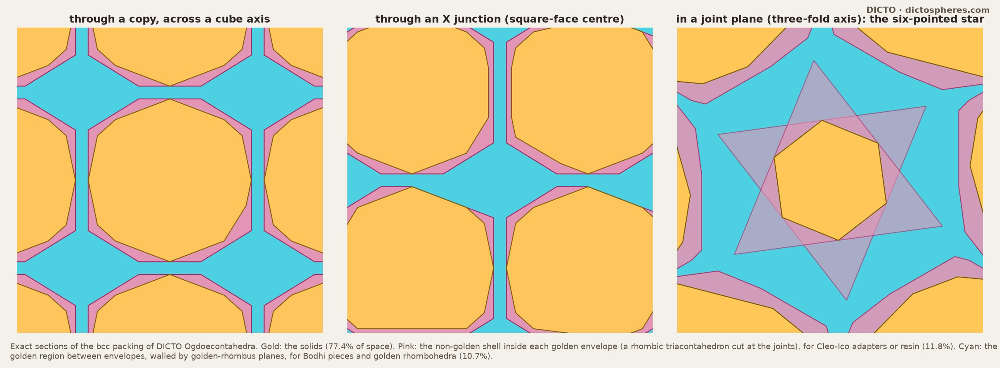<figcaption>Exact sections: through a copy, through an X junction, and in a joint plane (the six-pointed star).</figcaption></figure>
<h2>Golden Bodhi Pyrochlore: the golden fill</h2>
<p>DICTO's working name for the whole structure is <b>Golden Bodhi Pyrochlore</b>. Cutting the golden region by the envelopes' golden planes, the cubic packing shatters it into 1624 fragments, only 6 of them Bodhi pieces (tiny Diadems). In the five-fold chorus the envelopes don't collide, and the cut is far tidier: 30 pieces, 2 of them Mudras. Correction: this cut stops early and depends on the order the planes are tried, so the piece counts are indicative only. A canonical cut would split by every plane. Float.</p>
<figure>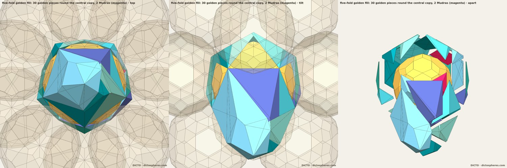<figcaption>The golden pieces round the central copy in the five-fold chorus; Mudras in magenta. Down the five-fold axis, tilted, and pulled apart.</figcaption></figure>
<p><b>The canonical cut, checked exactly.</b> Every chorus site snaps to an exact point in the golden frame. Cutting the central copy's golden region by every crossing golden plane gives 16,204 cells, which add up exactly to the cell, with 8,027 golden ones. The cut is exactly five-fold symmetric, but it shatters into 561 kinds, and only 5 Vajras (fine) appear, one five-fold set. The tidy "30 pieces" before was an artefact of the early-stopping cut. So the golden fill does not fall naturally into Bodhi pieces; it needs resin or a deliberate choice of pieces.</p>
<figure>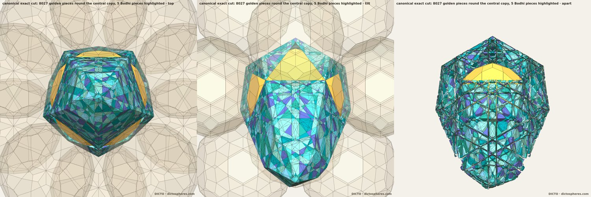<figcaption>The canonical cut: 8,027 golden pieces round the central copy, exactly five-fold symmetric. Down the axis, tilted, pulled apart.</figcaption></figure>
<h2>The chorus grown to radius 10 (exact)</h2>
<p>Grown to radius 10, the five-fold chorus holds 2,756 positions, with 385 silent and 2,371 kept. The exact check of all 7,465 close pairs finds <b>no overlaps</b>. Its structure has a known name: it is an <b>icosahedral irrational twin</b> (Ranganathan, Srivastava &amp; Lord 2006). Each voice is a repeating crystal, and neighbouring voices are turned 44.48° about a shared three-fold axis. Unlike classic five-fold twinned crystals, there is no gap and no strain; the whole cost is paid in silent copies.</p>
<ul><li><b>The seams.</b> Along the five boundaries the silent copies grow with the boundary's area, so every seam carries vacancies all the way out. Their density per area is still rising at radius 9 (0.31 to 0.43), so whether it settles to a constant is not yet shown. Whether they form a golden pattern is also open: a simple spacing test was inconclusive.</li>
<li><b>The core: a quasiperiodic chain.</b> Near the axis the silent copies come in rings of five. Every ring height is a golden number, (m + nφ) times one unit, and the ring distances from the axis step by φ. Growing the build finds a new ring closer to the axis by a factor φ. This is how a one-dimensional quasicrystal arises: the five-fold axis is irrational in every voice's lattice, so the lattice points closest to it form a Fibonacci-type chain, and those are the copies that must fall silent. The empty channel round the axis is about 1 unit wide, softly five-fold, plugged by the central copy, and never repeats along its length. Heights fitted in float on exact sites.</li></ul>
<figure>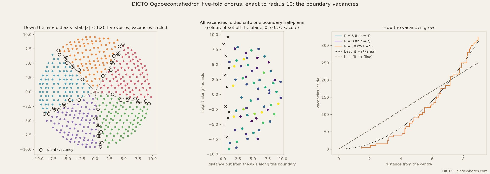<figcaption>Left: a slab down the five-fold axis, the five voices in colour, silent copies circled. Middle: every vacancy folded onto one seam (x marks the core rings). Right: vacancies grow like area (dotted), not like a line (dashed). A slab-sweep movie is saved for social media.</figcaption></figure>
<h2>The spine is a Fibonacci-type quasicrystal (exact)</h2>
<p><b>Golden heights, proved.</b> Every one of the 20 joint directions climbs the five-fold axis by a golden integer times one exact unit u (u² = 8/81 − 8√5/405). So every copy in the chorus, at any size, sits at a height (m + nφ)·u. The core rings have exactly five copies each, and their distances from the axis step by exactly φ, φ², φ³ and φ⁴.</p>
<p><b>The core is a cut-and-project set.</b> The core rings lie exactly in one plane through the axis. The copies in that plane form a flat lattice, and the axis crosses it at slope φ, the Fibonacci slope. The silent copies are exactly the lattice points within a fixed distance of the axis: none kept inside, none silent outside. That is the textbook construction of a one-dimensional quasicrystal, so the chorus's spine is a Fibonacci-type quasicrystal running through five ordinary crystals. Checked exactly over every site to radius 10.</p>
<p><b>And it is the Fibonacci chain itself (exact).</b> Along the axis, the core positions have two gaps, long and short, in exact ratio φ, and they spell out the Fibonacci word, LLSLLSLSLLS. The centre copy is one of the chain's points. Its window is exactly the canonical one: the first copy left singing sits precisely on the window's far edge. Extended exactly far beyond the build, the chain stays the Fibonacci word. So the silences hardness forces in the five-fold chorus are the Fibonacci chain, with the central Ogdoecontahedron as one of its points. Why hardness picks exactly that window is not yet shown.</p>
<p><b>Why that window: the ring clashes with itself (exact).</b> Every core copy inside the window overlaps its own four rotated twins, and every copy outside clears them. The five-fold ring forces the silences, with no other neighbour involved. The clash has one exact critical distance from the axis, t<sub>c</sub>² = 8/9 + 8√5/45 (t<sub>c</sub> ≈ 1.1342), a little inside the canonical Fibonacci width (≈ 1.2235). Up to height 12.8 along the axis, beyond the radius-10 build, no copy falls between the two, so the spine is exactly the Fibonacci chain there. Further out, the clash rule alone would keep a few copies the Fibonacci chain includes, starting at height 12.8. The spine would then become a thinned Fibonacci chain, still an exact quasicrystal. Whether another neighbour silences those copies is still open.</p>
<p><b>The first fork, at height 12.8 (exact).</b> The copy there clears its ring-mates but overlaps exactly one other copy, on a ring at height 13.8 that nothing else forces silent. One of the two rings must go, and either choice is equally minimal. Silencing the core copy keeps the Fibonacci chain; silencing the other ring gives the thinned chain. The chorus’s own rule breaks the tie by distance from the centre and keeps the core copy, so it takes the thinned chain. Beyond height 12.8, hardness alone no longer decides the spine.</p>
<div class="grid">
<figure>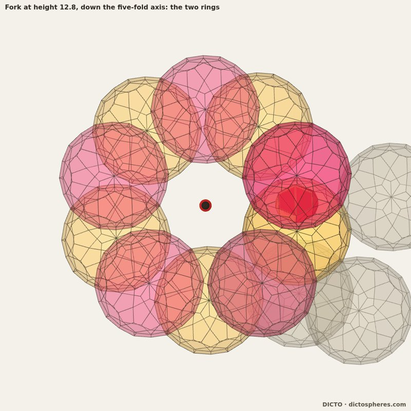<figcaption>Down the five-fold axis: the gold ring (core copies at height 12.8) and the magenta ring (height 13.8). Red: where one gold and one magenta copy overlap.</figcaption></figure>
<figure>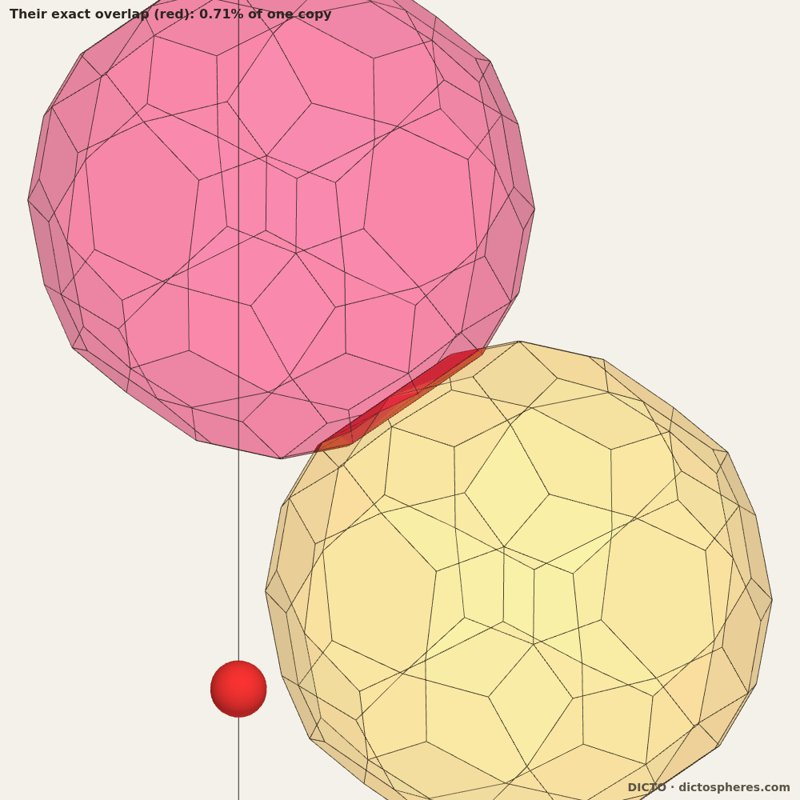<figcaption>Close-up: the exact overlap is a thin sliver, 0.71% of one copy (deepest face separation 232/81 &minus; 104&radic;5/81 &asymp; &minus;0.0068). Red dot: the core-chain point at height 12.8.</figcaption></figure>
</div>
<h2>Prior art</h2>
<p>A quick search and a fuller review (Fable) checked the library, the web and the main polyhedron catalogues. The paper will present the spine as a <b>new exact instance of known ideas</b>, not a new phenomenon.</p>
<ul>
<li><b>Known:</b>
<ul>
<li>Boundaries between periodic crystals can be one-dimensional quasicrystals (Sutton 1988&ndash;92; Rivier &amp; Lawrence 1988; Gratias &amp; Thalal 1988).</li>
<li>The icosahedral irrational twin (Ranganathan, Srivastava &amp; Lord 2006).</li>
<li>Lattice points near an irrational line form a cut-and-project set (Baake &amp; Grimm).</li>
<li>Windows bounded by hard-core conditions (Katz &amp; Gratias 1993): there the window is <i>chosen</i> for density, and exclusion acts between lattice shifts. Here it is <i>forced</i>, by a copy and its own five-fold rotated images.</li>
<li>Equal-energy variants of an irrational interface, separated by line defects (Sutton 1989): the nearest idea to the fork.</li>
</ul></li>
<li><b>Not found:</b> a Fibonacci chain <i>along</i> a five-fold junction line; a window fixed by a ring clashing with itself; an exact junction check for a hard polyhedron; a tie between two windows.</li>
<li><b>The Ogdoecontahedron as a solid (exact).</b> Its face arrangement is known. It is the pentakis dodecahedron with its 20 six-fold corners cut down to the edge midpoints, which is also the dual of the joined-lace dodecahedron L0(D). This was checked by exact face matching, with controls. It is <b>not in McCooey&rsquo;s Visual Polyhedra</b>, the largest online catalogue: all 553 solids were scanned. Its nearest relative there is the 6-truncated pentakis dodecahedron, whose truncation ends at the Ogdoecontahedron&rsquo;s face arrangement. The printed books (Wenninger, Holden, Pugh, Inchbald) were ruled out by what they cover, not read. No catalogue checked contains the exact solid: regular hexagons and kites of 117.85&deg;, 68.62&deg; and 55.69&deg;.</li>
<li><b>Still to read in full</b> (closed access): Katz &amp; Gratias 1993, Sutton 1989 and 1992, and Gratias &amp; Thalal 1988.</li>
</ul>
<p><b>The seams diffract.</b> The vacancies on one seam give sharp diffraction peaks about four times stronger than random points, at positions predicted by the two neighbouring crystals' lattices cut by an irrational plane. That is the signature of quasiperiodic order, but with 66 points it cannot be told from a long-period repeat. Float.</p>
<p class="note">Study files (research branch): studies/2026-10-16-ocd-pyrochlore. DICTO · dictospheres.com</p>
</main>
